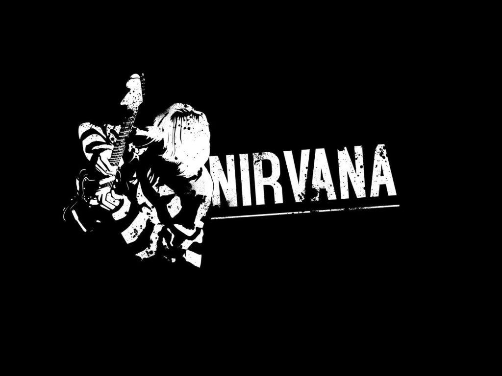
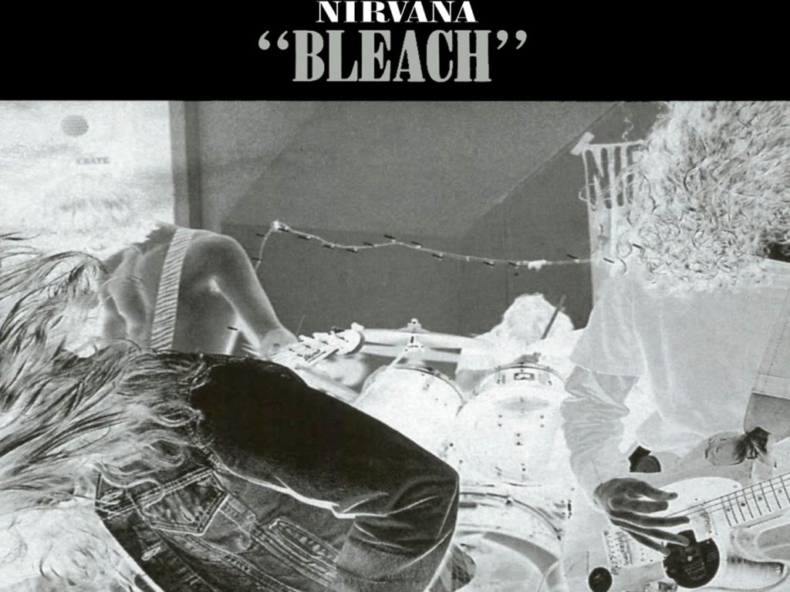
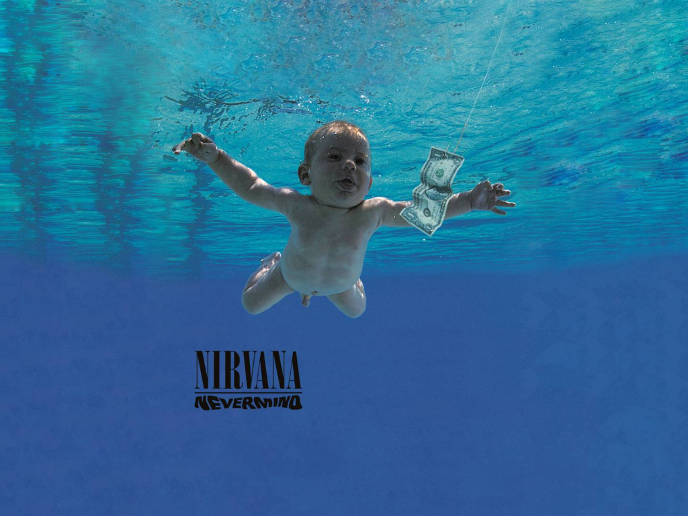

Nirvana
Nirvana fue una banda de grunge estadounidense procedente de Aberdeen, Washington, Estados Unidos integrada por el vocalista y guitarrista Kurt Cobain y el bajista Krist Novoselic en 1987. Desde su formación, Nirvana pasó a través de una serie de frecuentes cambios de baterista hasta que en 1990 se les unió definitivamente el baterista Dave Grohl. Nirvana actualmente es considerada como una de las bandas más importantes e influyentes de la era moderna.
A finales de la década de los años 80 Nirvana se estableció como parte de la escena musical de Seattle con su álbum debut Bleach, lanzado bajo el sello independiente de Seattle, Sub Pop, en 1989. La banda finalmente llegó a desarrollar un sonido que se basaba en los contrastes dinámicos, a menudo versos tranquilos y coros intensos. Un año más tarde, la banda firmó con la discográfica DGC Records y en 1991 lanzó su segundo álbum: Nevermind. El primer sencillo del álbum Smells Like Teen Spirit, escaló las listas musicales en todo el mundo e inició la explosión de lo que hasta ese momento era conocido como punk y rock alternativo en la escena musical mundial, en un movimiento al que los medios de la época se referirían como grunge. Además de Nirvana, otras bandas de la escena musical de Seattle como Pearl Jam, Alice in Chains y Soundgarden también ganaron popularidad; como resultado, el rock alternativo se convirtió en el género dominante en la radio y la televisión musical durante la primera mitad de la década de los 90.

El líder de la banda, Kurt Cobain se encontró a sí mismo referido en los medios de comunicación como «la voz de una generación» y a Nirvana como la «banda símbolo» de la Generación X. Cobain se sentía incómodo con la atención que se les brindaba y decidió enfocar la atención del público hacia la música de la banda, retando a la audiencia con su tercer álbum de estudio, In Utero. El álbum no tuvo el éxito ni las ventas esperadas y la popularidad de Nirvana disminuyó en los meses siguientes a la publicación del álbum. Sin embargo, buena parte de su audiencia alabó el interior «oscuro» de la banda, en especial después de su presentación en MTV Unplugged.
La corta carrera de Nirvana concluyó con la muerte de Cobain en 1994, pero su popularidad creció aún más en los años posteriores. Ocho años después de la muerte de Cobain, «You Know You're Right», una demo nunca terminada que la banda había grabado dos meses antes de la muerte de Cobain, escalaba las listas de radio y música de todo el mundo. En 2004 fueron colocados en el puesto nº30 en la lista de los 100 mejores artistas de todos los tiempos de la revista Rolling Stone y en el puesto nº14 según la revista Vh1. Desde su debut, la banda ha vendido más de 75 millones de álbumes a nivel mundial,8 incluyendo 10 millones de ejemplares de Nevermind en los Estados Unidos y 30 millones en todo el mundo.910 En el año 2014 Nirvana ingresó en el Salón de la Fama del Rock and Roll.
Albums
Bleach
En noviembre de 1988, Nirvana se puso en contacto con la discográfica independiente de Seattle Sub Pop, por medio de la cual fue lanzado su primer sencillo «Love Buzz». El siguiente mes la banda contactó con el productor Jack Endino y comenzó a grabar su primer álbum. El álbum debut de la banda titulado Bleach salió a la venta en el mes de junio de 1989. El álbum estuvo influenciado principalmente por The Melvins, Mudhoney y en gran parte por el rock clásico de los años 70 de Black Sabbath y Led Zeppelin.
El bajista Krist Novoselic comentó en una entrevista con la revista Rolling Stone que habían escuchado en medio de una gira, álbumes de The Smithereens y de la banda de black metal Celtic Frost, y también dijo que la combinación pudo servir como influencia. Durante la grabación del álbum se integró a la banda Jason Everman, quien a pesar de no participar en la grabación del álbum fue incluido en los créditos finales en agradecimiento por pagar las sesiones de grabación (una suma de 606,17 dólares), Novoselic explicó «queríamos hacerlo sentir como en casa, junto a la banda». Antes del lanzamiento del álbum, dos de los miembros de la banda insistieron en firmar un contrato ampliado con Sub Pop, por lo que la banda primero lo negoció con el sello. Después del lanzamiento de Bleach, Nirvana se embarcó en su primera gira nacional. El álbum se convirtió en un álbum favorito de las estaciones universitarias de radio de Estados Unidos, pero aún no ofrecía muchas pistas sobre en qué se iba a convertir la banda dos años más tarde. Debido a los conflictos y la creciente insatisfacción con Everman durante la gira, Nirvana canceló las últimas fechas de sus conciertos y regresó a Washington. Nadie le dijo a Everman que estaba fuera de la banda en el momento, aunque más tarde afirmó que en realidad él dejó la banda.
Nevermind
Los miembros de la banda descontentos con el trabajo de Sub Pop y estando interesados en seguir con sus sesiones con Smart Studios, decidieron buscar un nuevo contrato con un sello discográfico importante ya que ningún sello independiente podría volver a comprar a la banda sin un contrato. Siguiendo las recomendaciones de Kim Gordon, integrante de Sonic Youth, Nirvana firmó un contrato con el sello discográfico de David Geffen, DGC Records.
Nirvana comenzó a grabar su primer álbum con una gran compañía discográfica, su segundo álbum de estudio titulado provisionalmente Sheep. La banda tuvo un gran número de productores como ópciones pero finalmente optaron por quedarse con Butch Vig, después baterista de Garbage, para la producción del álbum. A pesar de que la banda decidió continuar con Vig en vez de seguir grabando en el estudio propiedad de Vig en Madison, Wisconsin, como el año anterior, decidieron ir a los estudios Sound City en Los Ángeles. Durante dos meses, la banda trabajó en una gran variedad de canciones, algunas de ellas incluyendo «In Bloom» y «Breed» llevaban ya tiempo en su repertorio, mientras que canciones como «On a Plain» y «Stay Away» no estaban todavía terminadas, y hubo que escribir sus letras en medio del proceso de grabación. Después de que se completaran las sesiones de grabación, Vig y la banda aguardaron el resultado de las mezclas. Sin embargo la banda quedó insatisfecha con los primeros resultados, por lo que decidieron buscar a alguien para que mejorara las mezclas finales. Los miembros de la banda pidieron a Gary Gersh, de Geffen, que les diera una lista de posibles seleccionados. La lista contenía varios nombres familiares, como Scott Litt (conocido por trabajar con R.E.M.) y Ed Stasium (conocido por su trabajo con The Smithereens). Sin embargo, Cobain temía que trabajar con productores conocidos hiciese que el álbum sonara como la música de esas bandas. Por lo que decidió escoger al último nombre de la lista, junto al nombre 'Slayer': Andy Wallace, (Wallace co-produjo el álbum de Slayer Seasons in the Abyss), aunque finalmente la banda expresó un menor descontento con su resultado definitivo, Nevermind.
Incesticide

Unos días más tarde, Nirvana realizó otra presentación memorable en los MTV Video Music Awards, donde Cobain creyó que con el éxito, a pesar de la negatividad de la cadena musical le permitirían tocar su nueva canción, «Rape Me». Los ejecutivos de MTV, que preferían el éxito «Smells Like Teen Spirit», estaban aterrorizados, pensando que era una canción en contra de ellos (debido a que «Rape» no solo significa «violar» en inglés, también significa «esclavizar»).
Al comienzo de la actuación, Cobain tocó y cantó las primeras notas de Rape Me, lo cual le dio un buen susto a MTV, que terminó cuando la banda comenzó a tocar «Lithium». Cuando entraban a la parte final de la canción, Novoselic estaba frustrado porque el amplificador de su bajo dejó de funcionar y, para dar un «aire dramático», lo lanzó al aire. Para su infortunio, el bajo cayó en su frente y lo dejó dolorido. Cuando terminó la canción y mientras Cobain estaba haciendo su clásica destrucción de instrumentos que se hacía al final de casi cada presentación, Grohl se acercó al micrófono y empezó a gritar «Hi, Axl!», refiriéndose al vocalista de Guns N' Roses, Axl Rose, con el cual la banda y Courtney habían tenido un altercado previo a la presentación del grupo, en el que Courtney sarcasticamente le había preguntado a Axl si quería ser el padrino de Francés Bean y Axl le respondió a Cobain diciendo que «callara a su perra». Cobain le dijo a Courtney «Cállate, perra», provocando risas del personal de Nirvana.60 Durante la ceremonia la banda recibió premios para las categorías Mejor Vídeo Alternativo y Mejor Artista Nuevo.
In Utero

Para In Utero, la banda escogió trabajar con el productor y músico Steve Albini, conocido por su trabajo de producción en Surfer Rosa de Pixies. Las sesiones con Albini fueron productivas y notablemente rápidas: la versión inicial del álbum fue grabada y mezclada en dos semanas, lejos de los meses de grabación y mezcla en Nevermind. La grabación se hizo en Pachyderm Studio, Minnesota.
Usar a Albini como productor fue una jugada deliberada por parte de Nirvana para darle al álbum un sonido menos «artificial», como si la banda hubiera querido alienar o distanciarse de su nueva audiencia que le prestó poca o nula atención a las bandas alternativas, oscuras, o experimentales que Nirvana intentó apoyar (como es el caso de The Jesus Lizard). Por ejemplo, una de las canciones del álbum, llamada irónicamente «Radio Friendly Unit Shifter», mostraba prolongados periodos de ruido de feedback o «retroalimentación». (En la industria musical, un álbum «amigable a la radio» («radio friendly») es descrito como un álbum «ideal»: capaz de alta rotación en radio y de vender varias copias, o «unidades»). Sin embargo, Cobain insistió que el sonido de Albini era simplemente el que Nirvana quería, una grabación «natural», sin muchas capas de «trucos» de estudio.
Después de su lanzamiento, los seguidores pensaron que la banda quería esta «distorsionada obra maestra». En realidad, la banda no estaba contenta con algunos aspectos de las mezclas de Albini. Específicamente, pensaron que los niveles del bajo eran muy graves, y Cobain sintió que «Heart-Shaped Box» y «All Apologies» no sonaban «perfectas». El productor por largo tiempo de R.E.M., Scott Litt, fue llamado para ayudar a mezclar estas dos canciones, con Cobain adicionando instrumentación y vocales. Litt también mezcló «Pennyroyal Tea», pero la versión de Albini fue usada en el álbum. (DGC planeó posteriormente lanzar la mezcla de Litt como un sencillo).
La Muerte de Kurt Cobain

A comienzos de 1994, la banda se embarcó en una gira por Europa. Aunque el tour comenzó bien, los conciertos gradualmente declinaron, con la imagen de un Cobain aburrido y distraído durante los conciertos, particularmente durante el paso por Italia. Después del directo en Terminal Eins en Múnich, Alemania, el 1 de marzo, Cobain fue diagnosticado con bronquitis y laringitis severa. El espectáculo de la noche siguiente fue cancelado. En la mañana del 4 de marzo, en Roma, Cobain fue encontrado inconsciente por Courtney Love y fue llevado a un hospital. Un médico declaró en una rueda de prensa que el cantante reaccionó a una combinación de Rohypnol y alcohol. El resto de la gira fue cancelada, incluyendo una visita planeada (después de dos años sin ir) al Reino Unido.
En las semanas posteriores, la adicción a la heroína de Cobain reapareció. Una reunión fue organizada por familiares y amigos de Kurt Cobain y convencieron a este para entrar en rehabilitación. Con menos de una semana en rehabilitación, Cobain escapó del centro de rehabilitación y voló hacia Seattle. Una semana más tarde, el viernes 8 de abril de 1994, el cuerpo sin vida de Cobain fue descubierto por un electricista en su casa de Seattle.